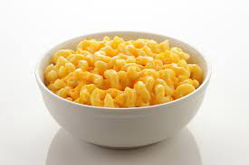

Macaroni Cheese

Description
This baked mac and cheese is a family favorite recipe, loved by both children and adults. It uses a combination of cheeses, layered in the dish as well as melted into a rich and creamy cheese sauce, for the ultimate in cheesy deliciousness! Perfect for a comforting dinner or as a holiday side dish!
Ingredient's
- 8 Ounces Macaroni
- 1/4 Cup Butter
- 2 1/2 Tablespoons Flour
- 3 Cups Milk
- 2 Cups Shredded Cheddar Cheese
- 1/ Cup Parmesan Cheese
- 2 Tablespoons Butter
- 1/2 Cup Bread Crumbs
- 1 Pinch Paprika
Steps
- Preheat the oven to 350 degrees F (175 degrees C).
- Cook macaroni according to the package directions. Drain.
- Melt butter in a medium skillet over low heat. Gradually add flour, whisking until well combined. Slowly pour in milk, whisking constantly until smooth. Stir in cheeses, and cook over low heat until cheese is melted and the sauce is a little thick. Put macaroni in large casserole dish, and pour sauce over macaroni. Stir well.
- Melt butter in a skillet over medium heat. Add breadcrumbs and brown. Spread over the macaroni and cheese to cover. Sprinkle with a little paprika.
- Bake in the preheated oven for 30 minutes. Serve.
Back To Homepage